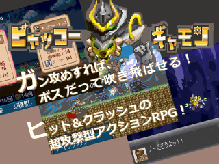

■2023-08-20 (日) 第15回ウディコン結果発表、1～4位&ピックアップ紹介！▼
今回の上位作品もどれも面白すぎる作品だらけで凄かったですね！
【WOLF RPGエディターコンテスト 公式サイト】
今回は上位4位までの作品と、個人的ピックアップをご紹介します！
【第１位 『SIBLINGS』】
作者：九乃頭虫(ここのずむし)様 ↑タイトルクリックで作品へ
熱中 43.9点(1位)+斬新 28.3点(1位)+物語性 26.0点(5位)+
画像音声 28.7点(1位)+遊びやすさ37.4点(2位)+その他24.0点(2位) = 188.3点

『SIBLINGS』は、自分の攻撃はコマンドで行い、
その攻撃直後に行われる敵の攻撃への回避や防御を
アクション的に行う、というアクションゲームです！
「斬撃」するまでは敵も動かないので自分のペースで進められますし、
アクション部分は迫力あるアニメーションやエフェクトで演出されます！
癖（へき）を感じられる「掴み攻撃」を受けたときのアニメは必見！
バトルシステムとしては、「斬撃」コマンドを選ぶたびに
敵の「生命力」を少し削れるのですが、それより大事なゲージは「戦意」！
攻撃を与えるか、敵の攻撃をジャストタイミングで「防御」(Cキー)することで
相手の「戦意」を削ることができ、敵の戦意が0になると
大打撃を与えることができます！
（もちろんこちらも敵の攻撃を受け続けると「戦意」が減って、0になると大ダメージを受けてしまいます）
『SIBLINGS』は敵の攻撃をタイミングよくガードできたときの感触が気持ちよく、
戦闘スピードも速いので、敵の攻撃を見切れるようになってくると
リアル時間ではあっという間に敵を倒せるようになったりするのが魅力！
ですがコンテストとして忘れてはいけないのが「高難度ゲームならではのサポート」！
こういう高難易度ゲームはたいてい「遊びやすさ」の評価が
下がりがちなのですが、本作はその辺りのサポートも万全です。
たとえば本作には「復帰地点を変更できるアイテム」があるため、
やられても一瞬でボスの目の前から再戦できるようにできますし、
何ならアイテム欄を見れば「難易度を下げるためのアイテム」が
最初から用意されているのです！
これらの機能のおかげで幅広いプレイスキルの人に楽しまれた結果、
「遊びやすさ」でも2位とトップクラスの結果を残せています！
●「難易度調整が可能（救済措置がある）」
●「リトライ速度」や「戦闘速度」が高速
●「無駄な待ち時間がない（メッセージ速度も重要！）」
このあたりのポイントはウディコンにおいての「遊びやすさ」に繋がる、
特に重要な部分だと思います。
【第２位 『文無し行商人の遺跡探索』】
作者：なす太郎 様 ↑タイトルクリックで作品へ
熱中 43.1点(2位)+斬新 24.0点(4位)+物語性 23.5点(8位)+
画像音声 26.6点(3位)+遊びやすさ32.0点(8位)+その他14.5点(13位) = 163.7点

2位の『文無し行商人の遺跡探索』は、
ダイスを強化していくローグライト（ランダム要素があるゲーム）！
強化できるダイスは、主人公であるBB（うさ耳少年）と後衛のアイラが、
能力値のダイス1つ、攻撃のダイス2つずつをそれぞれ持っており
戦闘では毎ターン、それらの計6ダイスを振って敵と戦っていきます。
また、ダイス強化とは別にEXPを使って「スキル」を取得することもでき、
ダイスの育成状況も加味しつつ強力なシナジーを
産みだせるように構築していく必要があります。
ダイスのうち「ステータス(能力値)ダイス」の方は
そのターンのテクニック(技)やインテリジェンス(賢さ)、
スピード(速度)、ディフェンス(防御力)を上げる効果があり、
スキルの効果やスキルのリチャージ速度、
受けるダメージなどに影響してきます。
一方「アクションダイス」には攻撃の種類とダメージが設定されていて、
敵の防御を貫通したり、範囲攻撃ができたり、
パッシブスキルを持ってると一部が強化されたりとそれぞれ特性があります。
戦闘に勝つごとに、これらのダイスを少しずつ強化していくことができます！
ということで本作では成長できる要素が多岐に渡るため、
システムへの理解が進まないとなかなか攻略が難しい作品です！
が、理解が進めばこのシステムなりの暗黙の攻略方法も分かってきます！
特に「どのダイスを強化すると強いか」という点に着目するのは、
最新版に付属していたヒントのテキストにも書いてありましたが
重要な部分です。
たとえばダイスの目をかなり操作できる状態なら、
「ダイスを全体的にまんべんなく鍛える」のと
「一極集中で尖らせて鍛える」の、どっちが
パフォーマンスが出るかなんとなく想像が付きますよね。
もちろん他の要素にも勝利のために重要な部分がありますので、
遊び慣れていくほどに新たな攻略が見つかっていきます！
そういう意味で、
「初めて見るターン制ゲームに挑戦＆理解していきたいゲーマーな人」
には非常に向いている一作だと感じますので、
気になる方はぜひチャレンジしてみてください！
キャラクターもみんなかわいくて魅力的！
ハマると何回も挑戦してしまう名作です。
【第３位 『不屈のスペラ』】
作者：テイク 様 ↑タイトルクリックで作品へ
熱中 40.6点(3位)+斬新 18.0点(11位)+物語性 20.4点(12位)+
画像音声 25.0点(5位)+遊びやすさ38.9点(1位)+その他15.5点(11位) = 158.5点

3位はデッキ構築ゲーム『不屈のスペラ』！
戦ってカードを獲得し、20枚のデッキを差し替えて
デッキをどんどん強力かつ相乗効果を
発揮していけるようにしていくゲームです！
戦闘では毎ターン、カード発動のコストである
最大MPが1ずつ増えていくシステム！
MPは毎ターン全快し、バトルの後半では
大きい消費MPの派手なカードをぶっ放せて爽快です！
本作のメインとなるカードには、「ダメージ」とは別に、
「HPが低い敵」「ランダム3回攻撃(?3)」「全体(ALL)」「右側の敵」
のように「使用時の攻撃対象」があらかじめ設定されています。
なので、対象を選ぶ手間なく1クリックでカードが使えて
とても手軽なのですが、一方でカードの取捨選択をさらに悩ませてくれます。
たとえばいくらダメージが高いからといって
「HPが高い敵」に攻撃するカードばっかり持ってたとしたら、
弱った敵(HPが低い敵)になかなかとどめを刺せなくなるわけですよ！
そして本作は「遊びやすさ」が1位になっていることからも分かるように、
難易度は歯ごたえがありながらも非常に親切な作品です！
カードにマウスカーソルを合わせると敵への想定ダメージが表示される
分かりやすさに始まり、上位レアを得たときに最低レアのカードを
自動で捨ててくれる便利機能など、
プレイコストを下げるための細かい配慮が行き届いています。
また、分かりやすさを保ちつつ、うまくプレイへの
「希望」を持たせる形になっているのが本作の「HP関連のシステム」！
たとえば本作は強い敵と戦うと割と簡単に瀕死になる代わりに、
「毎戦闘後にHPが『減っている分』の30％回復」する仕組みがあり、
「ピンチなほど回復量も多くなる」というお得感もありつつ
「同時にHP満タンにもなりにくい」ので
緊張感を維持しやすい作用をもたらしています。
さらには「残りHPが少なければ最大300％近くまで攻撃力が上がるシステム」
が搭載されており、最後の最後まで一発逆転のチャンスが残っています！
何ならそれを利用して、耐えて耐えてギリギリで
超大全体攻撃を撃って勝つなんて作戦も可！
強力なカード1枚あればそれを実行できる期待が生まれます！
ローグライク系やデッキ構築系のゲームの中には、
プレイ途中で「この強さじゃジリ貧だ、ボスに勝てないからリセット！」と
思わされることもたびたびある中、本作のように
ゲームオーバーになる寸前まで希望を持たせてくれる構成にできているのは、
私から見ても非常にすばらしいと感じました。
私もローグライク作りをする身として勉強になります。
また、チュートリアルのやり方も非常にすばらしかったです！
みんなにも真似て欲しい部分！ 具体的には、
1.最初はとりあえず最低限の動かし方だけを説明されて戦闘開始
2.分からないマークや文字などが出てくる中、とりあえずカードを選んで戦闘に勝利
3.戦闘が終わった後に、その分からなかったマークや文字の解説が入る
という構成で、数回に分けて教えてくれるので非常に学びやすい！
最初にドバっと情報が出てくるチュートリアルは覚えておくのが大変なので、
本作のようにとりあえず一度動かしてみて「これなんだろ？」と
【疑問を持たせてから】そこを説明してくれるのは本当に助かります！
という感じで、デッキ構築ゲームに初めて触れる人にも
ゲーム慣れした人にも幅広くおすすめしやすい一本です！
他にも、最初に選べる「精霊」を変えると、カードのドロー数やMP、
与えるダメージなどの基本能力も変わるので、
精霊ごとに違う攻略法が有効になってくるのも魅力！
特に後半の精霊はみんな強い！
私は見た目と性能含めバンシーが好きです。
【第４位 『ビャッコーギャモン』】
作者：こげ（ヒワイロボ） 様 ↑タイトルクリックで作品へ
熱中 36.6点(5位)+斬新 24.0点(4位)+物語性 32.2点(1位)+
画像音声 27.7点(2位)+遊びやすさ13.0点(--)+その他24.5点(1位) = 157.9点

とんでもない美麗ドット絵2Dアクションゲームが来たッ！！
それがこの4位の『ビャッコーギャモン』！ 3位とは0.6点差という僅差！
SFC（スーパーファミコン）時代に普通に売ってたゲームでしょこれ！
と思える一作！
本作は物語性が1位なことから分かるように、
非常に激アツな物語が展開されます！
キャラクターたちはみんなクセが強くて魅力的かつ印象的！
終わった後は心に強く残ること間違いなし！
一方で、アクションゲーム部分はかなりゲーマー向け！
敵の攻撃の隙と己の各武器の特性をよく見抜いた上で戦うことが
求められる印象で、攻撃に待ち時間が結構あるタイプの
アクションに慣れていないとザコ敵にも蹂躙されます。私です。
といっても初期公開後から難易度緩和などの調整が
たびたび入っており、独特な味を残しつつも遊びやすくする工夫を
されているようなので、このあたりの難しさはだんだんと
幅広い層向けになってそうです。
アクションが苦手な人にも、物語の感動だけでも
楽しんでいただきたいゲームですしね！
武器は、購入時にランダム2択の武器を3回選んで3つ装着する感じで、
武器種は剣や斧、アンカー、盾、バイク（!?）など多様！
そして注目すべきはそれらの各武器種の特性！
どれも分かってくるとその真の強さが見えてくる感じで、
どれを使ってもちゃんと強いんですよ！
たとえば「斧」は出が遅すぎて最初は弱い武器と思っていましたが、
敵の動きが分かって先置きできるとこんなに強い武器はない！
「こんな装備じゃボスに勝てないよー！」と思ってたら
武器の理解が進んであっさり勝てたりもします。
（相手によってはキツい場合もあります）
ただし武器には使用回数が設定されています！
回数がなくなった場合でも他の武器で戦うことで
回数を回復できるので安心！
さらには攻撃のたびに熱がたまるシステムもあるので
より注意深い武器運用が求められます！
武器によっては2～3連攻撃をするだけでオーバーヒートする場合も！
素早く連続して攻撃したい場合は、
敵の攻撃をローリングで回避することで熱を下げられるので、
「ローリング攻撃ローリング攻撃！」みたいな流れを作ることが理想的です。
また、ボスはどれもかなり強力ですが、
ボス戦のリトライが簡単なのがとてもありがたかったです。
ボス戦の前にはセーブポイントと一緒にたぶん必ず回復ポイントがあるので、
必ずHPも回復しましょう！
（モヒカン戦で回復ポイントに気付かないというやらかしをしてしまった私）
以上が上位4作品！ どれもめちゃめちゃ面白いのでぜひ遊んでみてください。
今年はトップ層に限らず、エントリー作品は
それぞれ独自の面白さが追求されており、順位が付いているものは
どれもこれも触れれば「おおー！」と言えるものばかり！
といいますか、順位外のゲームでも
「これが順位外なの！？」という作品はいっぱい！
隅から隅まで注目に値する内容だったと思います！
結果発表ページには部門別順位や一般投票コメントなども掲載されていますので、
それらも参考にしつつ、気になる作品があればぜひ触ってみてください！
たとえば新しいゲームに触れてみたい人は「斬新さ」部門を、
キャラクターや物語の良さを楽しみたい人は「物語性」部門がおすすめです。
そして以下は個人的なピックアップ紹介！
【ピックアップ 第9位『その日暮らしの冒険補償』】
作者：ハッピーエンド過激派 様 ↑タイトルクリックで作品へ

『その日暮らしの冒険補償』は保険会社経営ゲーム！
ファンタジー世界のお話ながら、保険屋さんの苦労が
こんなに分かるゲームはないでしょう！
斬新さ部門ではなんと2位！
本作は、「ケガをしたらポーションをもらえる保険」などを付けてもらうべく
相談しにきた冒険者たちに対し、「前払金」を払ってもらって
「軽傷補償」などの保険契約をしたり、そもそも断ったりするゲームです！
もしその冒険者たちがケガをして帰ってきたら
自分はポーションなどを渡すためのお金を失ってしまいますが、
そうでなければ前払いしてもらった保険金は丸儲けです！
ということでこのゲーム、究極的にはデータを見て
「付ける補償を選び」、「契約」するか「断る」かの2択だけで進んで行きます！
なので理想の行動としては、
「保険がなくても平気そうな人たちにはいっぱい保険をふっかけ」、
「どう考えてもケガして帰ってきて赤字になりそうな人たちは断る」、
「期待値的には得になりそうな人にも保険出しておく～？ ああー迷う！？」
という判断が求められます。
付けられる「補償」の種類はゲームが進むごとに増えていきます。
たとえば、どう考えても「毒」などにならなさそうな場所に行く冒険者たちに
「異常補償」だけを付ければ何も補償しなくていいので絶対儲けたりできます！
ズルい！ 後々モラルを問われる場面ではチクチク言われるかもしれません。
しかし補償を付けたり外したり、契約を断ったりするには「気力」が必要です。
気力がないとどんなに損な内容でも契約しなければなりませんから、
気力の維持は重要です。
また「そこ行くなら装備とか護衛付けた方がいいって！」みたいな感じで、
気力をたくさん払って装備や護衛を付けさせることで
冒険者たちが受ける被害を減らせる要素もあります。
そんな中で最適な保険を考えて提供していくのが本作！
ゲーム中での選択肢自体はそこまで多くないはずなのに、
悩ましい局面が頻繁に訪れるゲームです！
なお、判断のために提示されるデータは慣れるまでは多く感じるのですが、
最初は「前払金（収入）」と「平均補償額（出て行くお金）」だけを見て遊んで、
慣れたら「補償分布」（どういう確率でいくら保険金払うことになるか）の
グラフも見て判断していくのがいいでしょう。
そして本作、契約を断るとそのパーティーは
冒険に行かなかったことになるようで、意外と人の運命に影響を与えます。
保険屋に「冒険に行くべきか」を判断してもらうなんて
もう冒険者ギルドでもやっているような空気感ですが、
実際、この保険屋という仕事は彼らの住む環境を徐々に変えていきます。
主人公はお店で保険の契約をし続けるだけなのですが、
来る人たちと関わることで起きる主人公の心境の変化や、
周りが変化していく中で漏れ伝わってくるお話もこの作品の大きな魅力です！
「保険屋さんって大変なんだなあ……でもえげつないなあ……」
と思えるようになるこの作品！
リアルの保険の勉強にもなりそうという意味で、
ぜひおすすめしたい個人的ピックアップです！
【次回、第16回について】
さて、ウディコンは来年2024年の『第16回』も開催予定です！
すでにスケジュールも決定済みです！
今年はまだまだウディタVer2の作品も多かったですが、
来年はさらにウディタVer3の機能を活かした作品も
増えるかもしれません。楽しみにお待ちしております！
それでは、第15回ウディコンに関わってくださった
全ての関係者の皆さま、今年も本当にありがとうございました！
よければ来年もぜひ見ていただけますと幸いです！
2023-08-20 (日)  カテゴリ: ウディタ
カテゴリ: ウディタ
 カテゴリ: ウディタ
カテゴリ: ウディタ